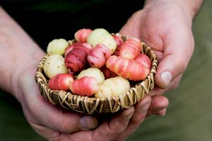
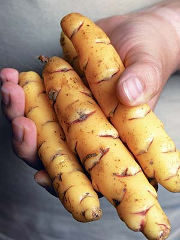
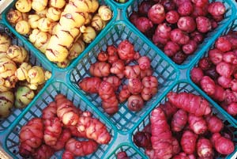

Oca (Oxalis tuberosa) is a long-ignored South American tuber that is now beginning to show up in markets that specialize in unusual Latin American ingredients. Oca (also spelled ocha) is a highly productive perennial plant with waxy, brightly colored tubers that are perfect as a season-extending crop - they’re best harvested from the garden or greenhouse in late December or early January. In its native lands of Bolivia and Peru, oca is second only to the potato in agricultural importance. It is an excellent source of carbohydrates, phosphorus and iron, as well as essential amino acids that promote the health and proper function of muscles, organs, nails, hair, skin and more.
It’s hard to generalize about oca’s flavor and culinary attributes, because there are so many kinds: Some are best eaten raw; others are best boiled, baked or steamed. Sun-dried oca can be eaten like dried figs or stewed like fruit. Oca tubers also can be grilled, fried or candied like sweet potatoes. As for flavor, they vary from potatolike, to chestnut-sweet, to apple and celery. ‘Apricot,’ a new variety from New Zealand, is similar in taste to its namesake. Oca’s cloverlike leaves and yellow, trumpet-shaped flowers are edible and make great additions to salads.
Actually, oca is not new to horticulturists - it was introduced to England, the United States and France as a novelty during the 1830s. Known as “South American wood sorrel” (it’s a cousin of the common wood sorrel), it caused such a stir that enthusiasts held oca parties where entire meals were constructed around these fascinating tubers.
Its most common name is oca, the Spanish spelling thought to be derived from oqa, a word from the Quechua language indigenous to the Andean region and spoken by the Incas. However, in many parts of South America, other names such as quiba, hibias, timbo, apilla and even papa roja (“red potato”) are common, so reading regional cookbooks can be challenging unless you have a South American dialect dictionary on hand.
Because the plant plays a large role in stories about the origin of many South American peoples, botanists at Cornell University and the Field Museum in Chicago analyzed the genetics of oca to determine its source. It appears to descend from two wild ancestors in Bolivia, but has undergone so much genetic alteration due to human intervention and continued selection over the past 1,000 years that the chemistry of the cultivated plants is quite distinct from the wild forms. For example, pre-Incan peoples bred out some of the acids found in the skin of the tubers, altered day length sensitivity and increased the proportion of starches. As a result, there are literally thousands of South American varieties - although most of them don’t have commercial names. In New Zealand, where oca has been cultivated as a commercial crop under the name “New Zealand Yam” since the 1860s, there are quite a few named varieties, and there is a continuing program to develop better ones. It is these New Zealand varieties that we are beginning to see in U.S. produce markets because they adapt most readily to our growing conditions.
New Zealanders also have undertaken the most thorough nutritional analysis of oca to date. Like beets, spinach and rhubarb, oca contains oxalic acid, which can be harmful to the urinary tract if ingested in large amounts. According to Purdue University, however, oca actually has less oxalic acid than spinach, and one would have to eat nothing but oca to experience any harmful effects. Furthermore, most of the oxalates in oca are water-soluble, which means all you have to do is boil or steam it and pour off the water. And when left in the sun for a few days, several varieties will undergo a chemical change in which some of the acidic elements are converted to sugars.
To play it safe, anyone who has an allergic reaction to rhubarb, sorrel, beet greens or spinach, or anyone suffering from gout or kidney stones, might want to avoid oca.
Oca is day length sensitive (even the New Zealand varieties) and will not tuberize until there are less than 12 hours of light per day. For most of the United States, this means the tubers won’t begin to form until November, so keep them well covered and free of frost until Christmas, or raise them in plastic-covered tunnels with some sort of minimal heating arrangement so the tops don’t freeze.
Oca is propagated from tubers, so it’s cloned in a manner similar to potatoes. It prefers sandy soil, partial shade and cool, damp weather. Plant whole tubers in pots in late winter (mid-March is my method), and once they form healthy vines, transfer them to tubs or into the ground after the threat of frost has passed. Planting at this early date is important because the plants must be well established before hot weather sets in. They don’t tolerate hot sun and a hard drought certainly will kill them unless they’re well watered. To avoid these problems, I plant mine in tubs, which I move into a greenhouse so the plants can run their course. They die back naturally in January, which is when I harvest the tubers.
A sandy cactus potting mix seems to work best as soil, and they must be fed heavily, especially in September and October. They have no known pests, at least not in North America, which is a plus for organic growers. However, mice, barn rats and chipmunks are quite fond of oca, and I’ve had voles chew their way through the bottom of my tubs to steal the tubers.
Tub culture is convenient, but the plants don’t produce as many tubers as they would in open ground. In open ground or in tunnels, you can triple tuberization: Layer and bury the rubbery stems (which often reach 2 feet in length) just beneath the surface so tubers will form around the buried stem sections. Tubers also will form along the underside of stems that touch the ground.
You’ll get many different sizes of tubers from the same plant, some large (2 to 3 inches in length or longer, depending on the variety), and hundreds of tiny ones. For seed stock, you can store the little ones in a cool, dark place until it’s time to plant.
Once you get a working system down pat, the yield from your oca plants can be huge. It always has puzzled me that commercial growers haven’t turned to oca as a good winter crop because a lot of money can be made on it now that chefs are putting it on high-end menus and it’s one of few crops that are harvested fresh in winter. Plus, oca stores well. Just keep the tubers in a cool, dry place out of direct sunlight. They don’t need to be kept in a root cellar.
This appetizer from Peru is both delicious and easy to make. For spicing, Peruvians prefer to use their indigenous aji escabeche (ceviche pepper), an ancient variety with huge flavor and controlled heat. But because it’s almost impossible to find in the United States, I opted for jalapeño. You can add more heat if you like: Oca can take it. And by the way, if you can’t find oca, you can always use waxy potatoes chopped into 1-inch segments. Not quite the same, but the salsa will work for both.
Steam tubers in a tightly covered container over high heat for 20 to 25 minutes or until the oca is cooked “al dente” (oca cooks quickly and can easily become mushy; overcooking will cause most varieties to lose their bright color or turn transparent). Remove from heat and pour into a large work bowl. Toss with cold wine and cover. Set aside to cool.
While the oca is cooking, shell and devein the shrimp, then dust lightly with flour (optional). Heat the butter and olive oil in a large sauté pan and cook the shrimp until lightly golden. Remove from heat, lift out with a slotted spoon and combine with the steamed oca. Once the oca and shrimp cool to room temperature, add the dressing. Stir well and let stand for 10 minutes, then serve immediately. Serves 6 to 8.
OCA/SHRIMP MIXTURE
3 pounds oca tubers
¼ cup cold dry white wine
1 pound fresh shrimp, shelled and deveined
1 tbsp flour (optional)
1 tbsp butter
1 tbsp olive oil
SALSA DRESSING
Coarsely puree the following; adjust seasonings to taste:
½ tsp salt
1 tsp sugar, or more to taste
2 cups chopped cilantro, leaves only
2 tbsp minced shallot
2 tsp minced garlic
2 tbsp finely chopped jalapeño pepper, or more
heat to taste
3 tbsp lime juice
7 tbsp olive oil
Heirloom Vegetable Gardening: A Master Gardener’s Guide to Planting, Seed Saving and Cultural History by William Woys Weaver, now on CD. If you want to explore the fabulous flavors, fascinating history and amazing diversity of vegetables, this is the book to start with. Food historian and Mother Earth contributing editor Will Weaver profiles 280 heirloom varieties, with authoritative growing advice and incredible recipes. First published in 1997, Heirloom Vegetable Gardening has since been out of print, with used copies selling online for as much as $300. We are proud to present the original text, with color photos, as a digital book on CD-ROM. Order now.
|
 ROB CARDILLO Oca’s brightly colored tubers are versatile in the kitchen. |
ROB CARDILLO Oca con Salsa Picante, a tasty Peruvian appetizer. |
DR. TOMKE LASK Add oca’s flowers and shamrock-shaped leaves to salads. |
|
 PIXTAL/SUPERSTOCK Oca tubers come in many sizes and colors. |
 DAVID CAVAGNARO You can find oca in markets that specialize in obscure Latin American ingredients. |
|